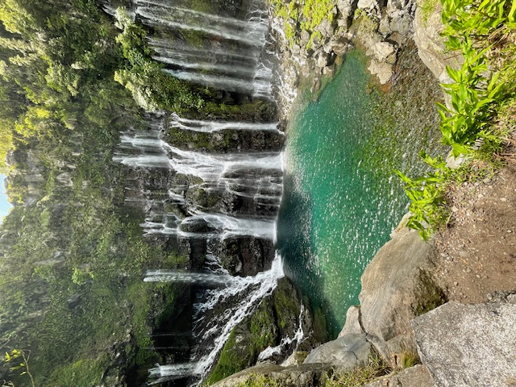

La Cascade de Langevin, aussi appelée "Cascade Grand Galet", est un magnifique site naturel de l’île de La Réunion, dans le Sud Sauvage. Elle est connue pour ses nombreuses chutes d’eau qui tombent sur une grande paroi rocheuse entourée de verdure. Facile d’accès, elle attire beaucoup de visiteurs, locaux comme touristes. En chemin, la route longe la rivière Langevin et offre de superbes paysages. C’est un endroit idéal pour pique-niquer, se baigner dans l’eau fraîche, ou prendre de belles photos. La cascade montre la richesse naturelle de La Réunion, un trésor de l’île. Une visite à cet endroit garantit un moment au cœur de la nature.

“Au départ du Piton Maïdo à 9h, je monte à bord du camping-car, prêt pour une belle journée d’excursion. La descente offre une vue imprenable sur le cirque de Mafate, baigné par les premiers rayons du soleil. Je traverse les champs de géraniums et les forêts de tamarins avant d’atteindre la route côtière à Saint-Paul. La mer scintille à notre gauche alors que je roule vers le Sud, passant par Saint-Leu et Saint-Pierre.
Vers 12h, j'arrive à la cascade, majestueuse et entourée de verdure. Je gare le camping-car près d’une aire ombragée et je déploie une table pour un pique-nique face à la rivière. L’après-midi est rythmé par des baignades rafraîchissantes et une promenade jusqu’aux petits bassins en aval. Vers 14h, je reprends la route, émerveillé par cette journée où montagnes et cascades se sont mélangées.”